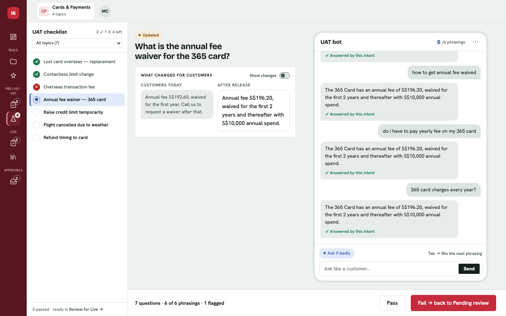
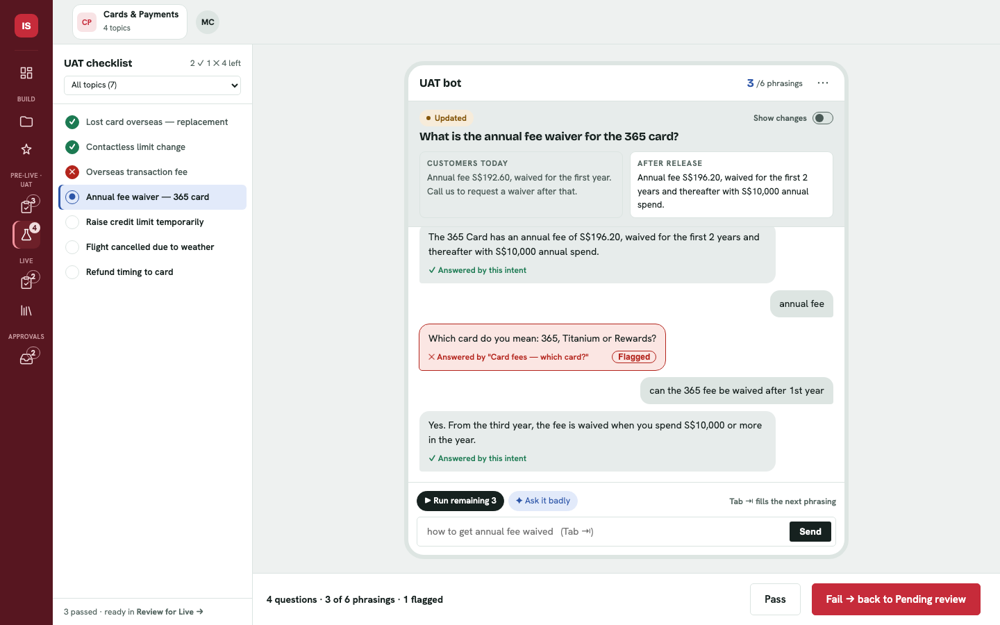
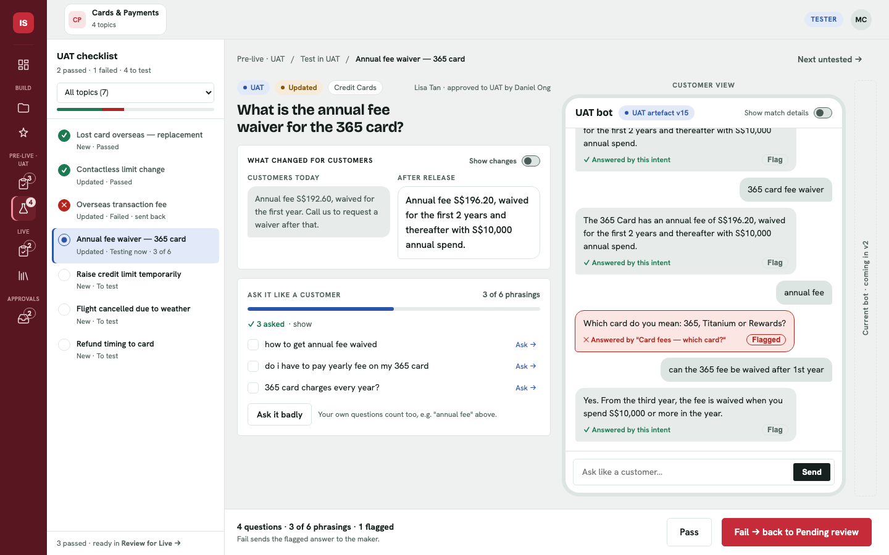

Same features, far less on screen. "Ask it like a customer" now lives inside the bot. Click a screenshot to try it: press Tab in the input box, or ▶ Run remaining.
Three columns: checklist · what changed · bot. Removed: the breadcrumb, the extra tags, the phrasing card, the v2 rail, the checklist sub-lines and the "Customer view" label. In the bot: the next phrasing appears as grey text in the input box (Tab fills it), ▶ Run remaining asks every untried phrasing for you, ✦ Ask it badly writes a messy version, and progress shows as "3/6" in the bot header. Flag only appears when you hover over an answer.

After pressing ▶ Run remaining: 6 of 6 phrasings tried, and "Run remaining" disappears.
Two columns: checklist · bot. "What changed" is pinned at the top of the chat. This is the most compact version, but the pinned card takes space away from the conversation.

